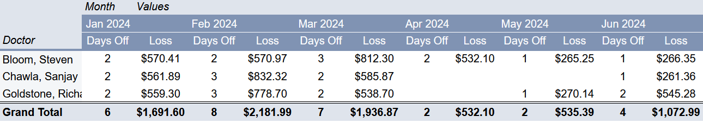

Physician Vacation Revenue Impact Analysis

Problem Statement / Goal
Healthcare leadership lacked visibility into the financial impact of physician absences. While providers frequently took vacation or time off, there was no standardized way to quantify the resulting loss in charges, revenue, or compensation. This made it difficult for both physicians and regional directors to plan effectively and ensure revenue targets were met.
The Goal: To build a data model that quantifies the financial impact of physician absences by estimating lost charges, revenue, and compensation—enabling data-driven decisions for scheduling and revenue reallocation.
Dataset Description
Data Transformation & Methodology
This project focused on transforming fragmented operational and financial data into a unified analytical dataset. The process included:
- Cleaning and joining multiple source tables into a single structured dataset.
- Calculating average daily charges per provider, clinic, and day of the week over the last 3 months.
- Estimating FFS Charges Lost based on expected productivity during absence periods.
- Applying historical collection rates to calculate FFS Revenue Lost.
- Integrating provider compensation models to estimate Doctor Compensation Lost.
Key SQL Work
-- Average Monthly Charges by Provider
WITH avg_daily_charges AS (SELECT
DATE_TRUNC('month', date_of_service) AS month_of_service,
provider_display_name,
CASE WHEN COUNT(DISTINCT date_of_service) = 0 THEN NULL
ELSE SUM(amount) / COUNT(DISTINCT date_of_service)
END AS avg_charges_per_day,
CASE WHEN COUNT(DISTINCT date_of_service) = 0 THEN NULL
ELSE SUM(finance_expected) / COUNT(DISTINCT date_of_service)
END AS avg_collections_per_day,
CASE WHEN COUNT(DISTINCT date_of_service) = 0 THEN NULL
ELSE SUM(finance_expected) / COUNT(DISTINCT date_of_service) * 0.32
END AS avg_doc_comp_per_day
FROM {{ ref('stg_carecloud__charges_combined_carecloud_focus') }}
WHERE
date_of_service >= '2024-01-01'
AND date_of_service < '2025-05-30'
AND procedure_grouping IN ('Office Visit', 'Diagnostics')
AND insurance_policy_type = 'FFS'
GROUP BY 1, 2
)
SELECT * FROM avg_daily_charges
ORDER BY month_of_service, provider_display_name;
Highlight: Built a predictive baseline using rolling averages and applied financial logic to estimate revenue and compensation loss at a per-provider level.
Business Impact
- Enabled physicians to understand the financial impact of their time off.
- Provided regional directors with a clear estimate of revenue loss per absence.
- Supported proactive scheduling and resource reallocation to meet revenue targets.